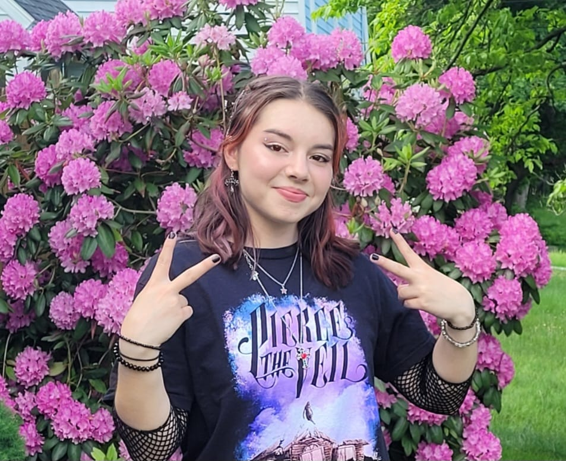

Alessandra Sueiro
About Me
I am currently a sophomore who is double majoring in English and Portuguese and Brazilian Studies and a member of the Commonwealth Honors College at the University of Massachusetts Amherst. I’m pursuing a specialization in Writing, Rhetoric, and Literary Studies to gain the skills necessary to work in publishing and editing. In addition, I am minoring in Environmental Science as a I have a desire to incorporate advocacy into my writing.

Current Academics
As someone who is a bilingual heritage speaker, my personal experience with language and literature has inspired my interest in the field of editing and translating, but overall working in the publishing field. Currently, I am focused on improving my creative and academic writing skills in both languages.
Contact me through my email or Linked In.